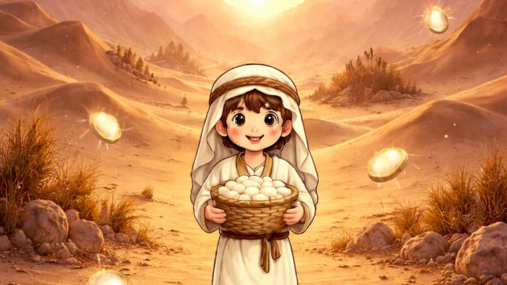
Petualangan
MANNA — DAILY BREAD
Kumpulkan manna setiap hari dan belajar merasa cukup. Terinspirasi Keluaran 16: percaya pada Tuhan dan hidup bersyukur.
MAINKAN ▶ MANNA — DAILY BREADgame Alkitab & edukasi anak · main langsung di browser

Kumpulkan manna setiap hari dan belajar merasa cukup. Terinspirasi Keluaran 16: percaya pada Tuhan dan hidup bersyukur.
MAINKAN ▶ MANNA — DAILY BREAD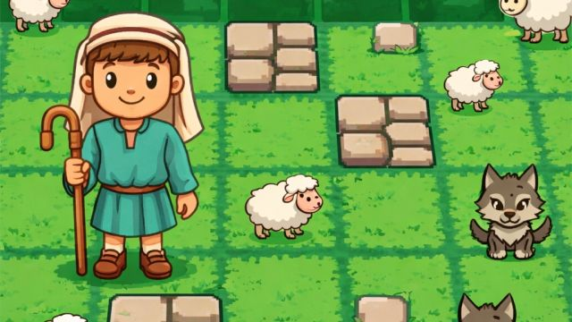
Kumpulkan domba yang tercerai dan hindari serigala. Terinspirasi Yohanes 10:11, tentang kasih dan tanggung jawab pada sesama.
MAINKAN ▶ THE GOOD SHEPHERD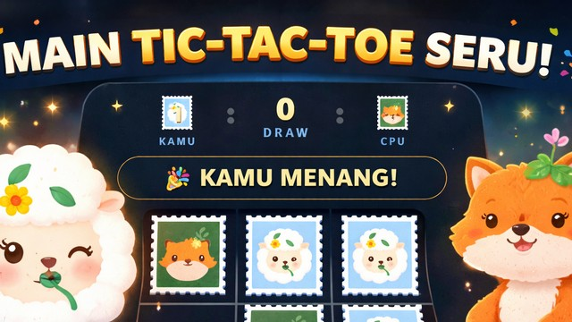
Tic-tac-toe dengan marker simbol hewan Alkitab (singa, domba, ular, elang, rubah). Tiga tingkat kesulitan: easy, medium, hard.
MAINKAN ▶ BIBLE TIC-TAC-TOE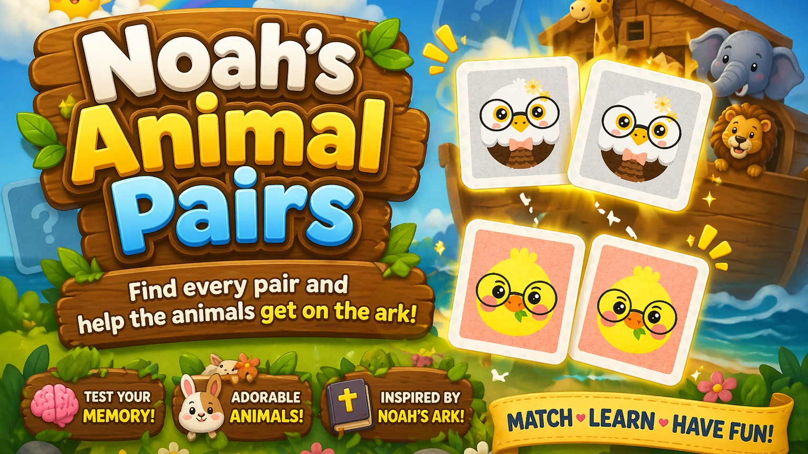
Game memori: buka kartu, ingat posisinya, dan temukan semua pasangan hewan ala bahtera Nuh.
MAINKAN ▶ NOAH'S ANIMAL PAIRS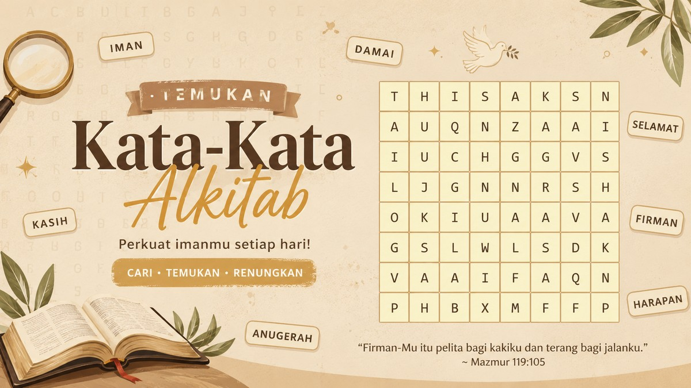
Temukan kata-kata Alkitab tersembunyi di kotak huruf, mendatar, menurun, atau diagonal.
MAINKAN ▶ BIBLE WORD SEARCH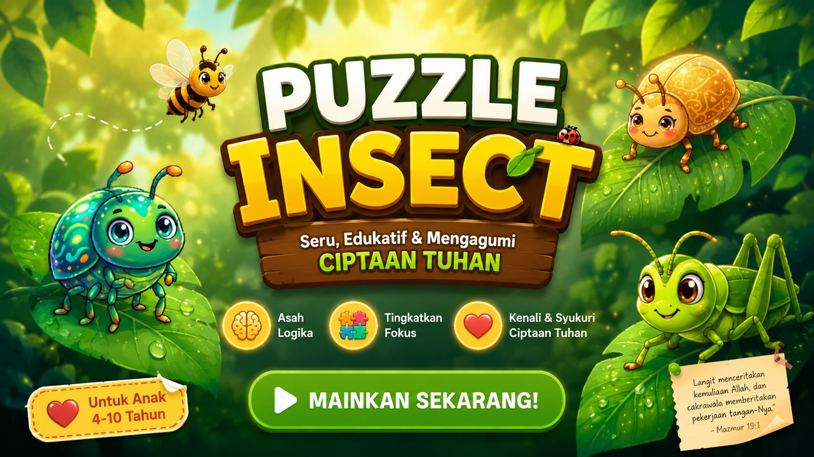
Susun puzzle serangga warna-warni sambil mengagumi keindahan ciptaan Tuhan. Melatih fokus dan logika.
MAINKAN ▶ PUZZLE INSECT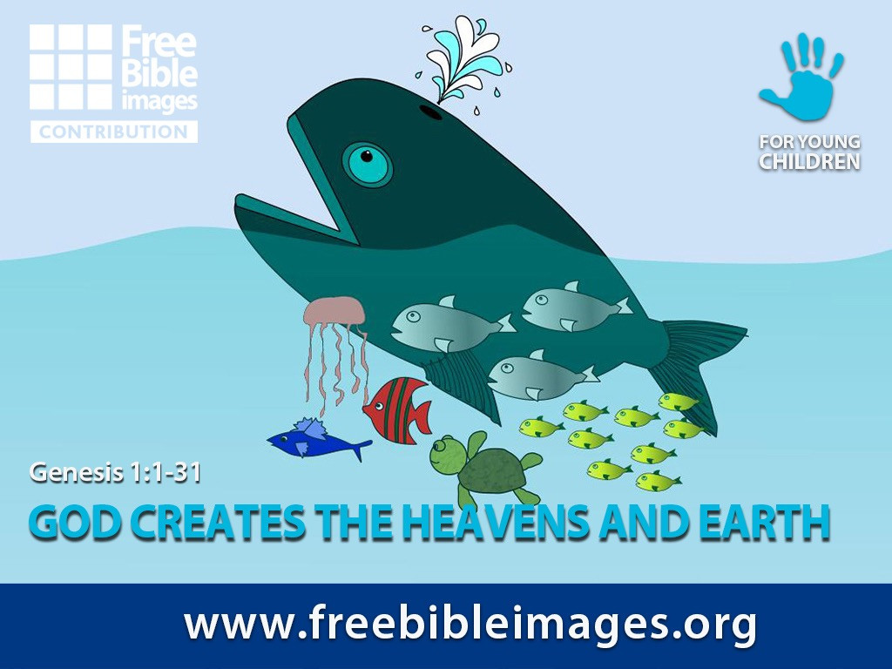
Susun gambar tujuh hari penciptaan dari Kejadian 1, satu hari demi satu hari.
MAINKAN ▶ GENESIS PUZZLE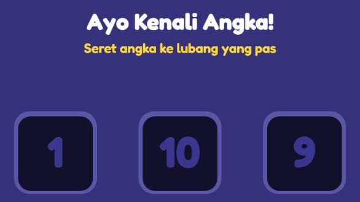
Belajar mengenal angka dengan cara yang menyenangkan untuk anak.
MAINKAN ▶ AYO KENALI ANGKA!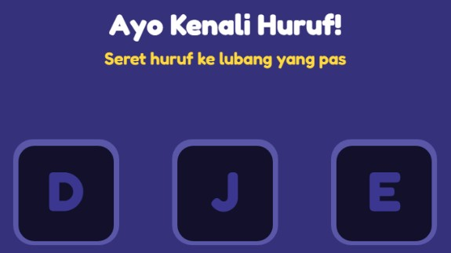
Belajar mengenal huruf lewat permainan interaktif untuk anak.
MAINKAN ▶ AYO KENALI HURUF!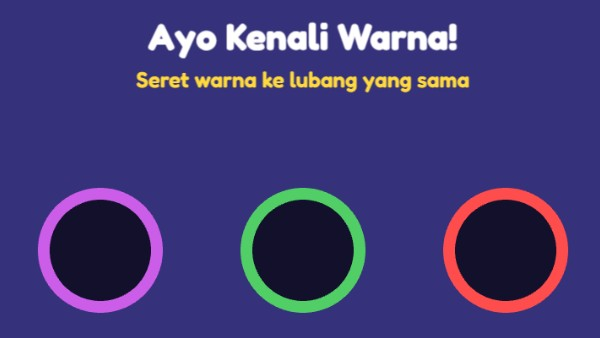
Kenali berbagai warna sambil bermain, cocok untuk anak usia dini.
MAINKAN ▶ AYO KENALI WARNA!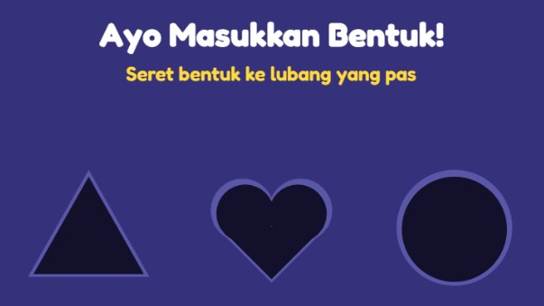
Cocokkan dan masukkan bentuk ke tempat yang tepat. Melatih observasi anak.
MAINKAN ▶ AYO MASUKKAN BENTUK!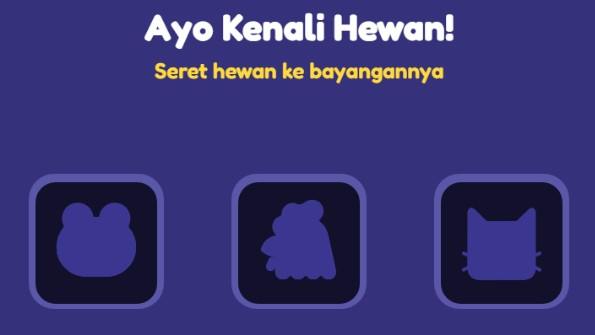
Kenali berbagai hewan ciptaan Tuhan lewat permainan sederhana untuk anak.
MAINKAN ▶ AYO KENALI HEWAN!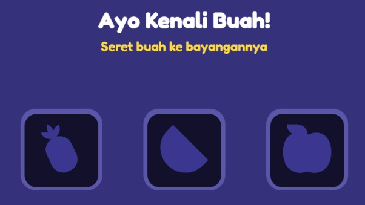
Belajar nama dan bentuk buah-buahan dengan cara yang seru.
MAINKAN ▶ AYO KENALI BUAH!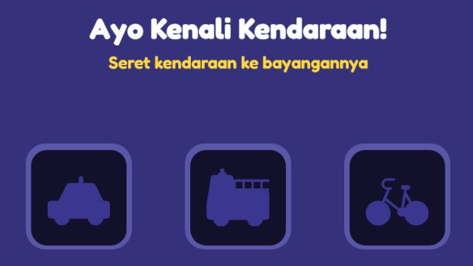
Kenali berbagai kendaraan di sekitar kita lewat game interaktif untuk anak.
MAINKAN ▶ AYO KENALI KENDARAAN!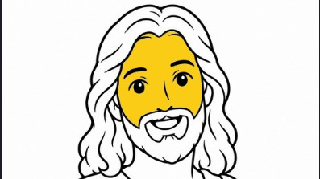
Mewarnai gambar Yesus dengan ember warna. Santai, kreatif, dan mudah dimainkan anak.
MAINKAN ▶ EMBER WARNA — MEWARNAI YESUSTidak ada game yang cocok.
Saya Henky Adlin Shan. Lewat sukalogika saya membuat game yang ringan dimainkan langsung di browser, tanpa install, tentang cerita dan nilai-nilai Alkitab serta belajar untuk anak. Setiap game dibangun dengan doa & kode.
“Ujilah segala sesuatu dan peganglah yang baik.”1 TESALONIKA 5:21